RENOVATION
Notre entreprise met à votre disposition les compétences de divers corps de métiers liés au bâtiment (ouvriers, peintres, géomètres, maçons, électriciens...), pour vous assurer la réalisation de vos travaux de rénovation selon votre budget.
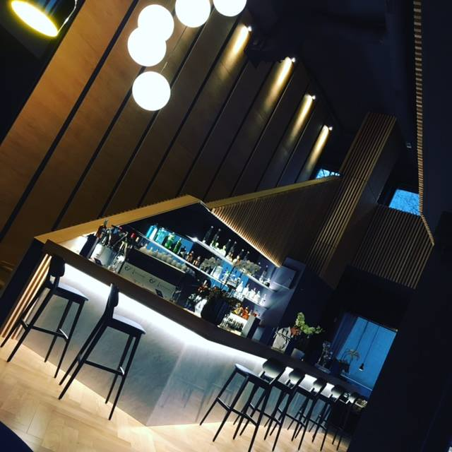
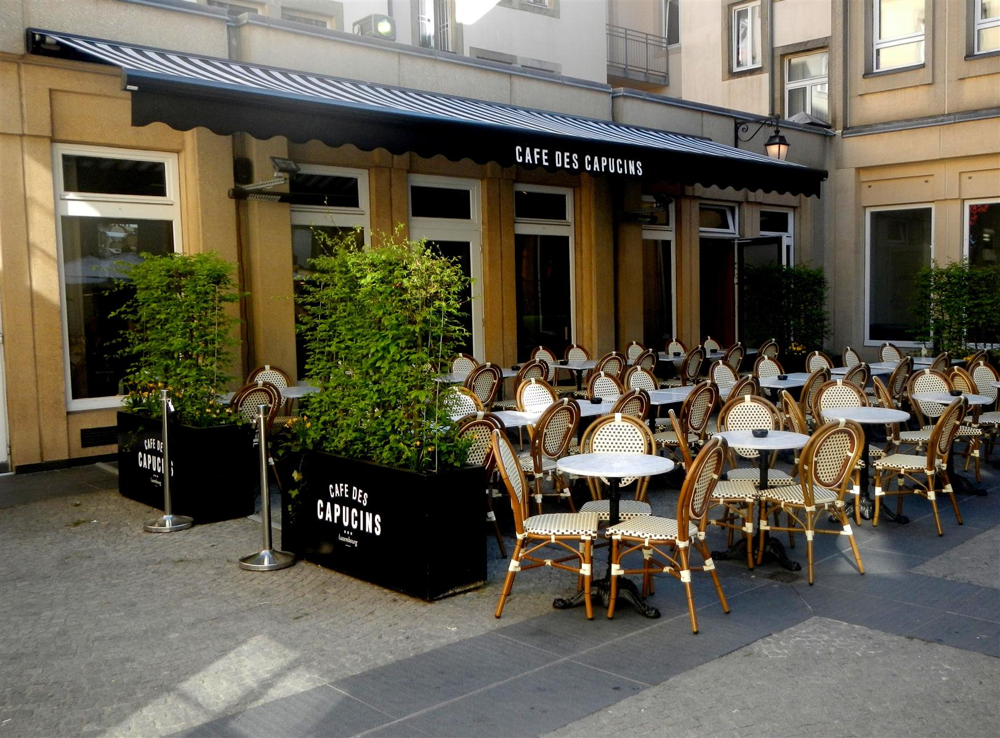
 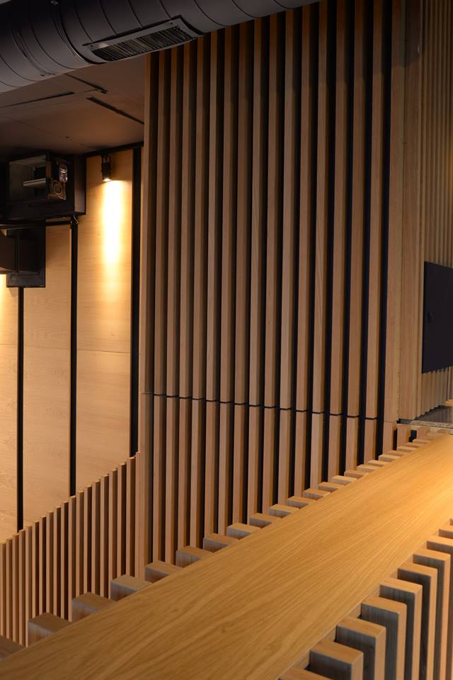
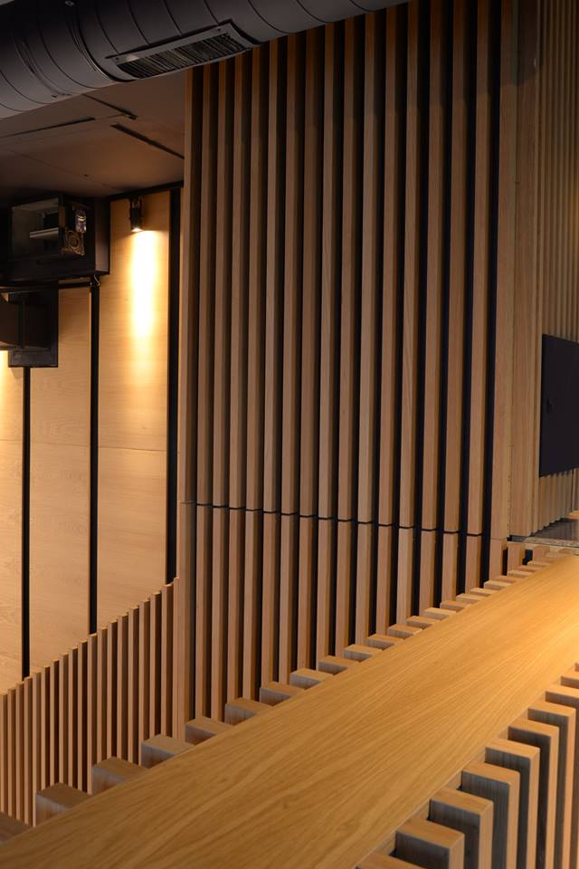
Getra vous garantit un interlocuteur unique, qui centralise vos demandes et procède à une supervision globale et un suivi performant de chaque projet de rénovation, travaux, ou chantier...
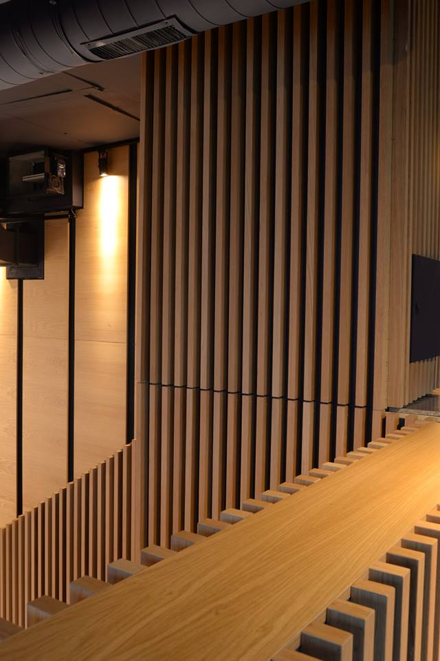Avec le soutien de nos architectes et chefs de projets, nous proposons également l'étude prévisionnelle de votre projet:
Planification de chantier.
Budgétisation des coûts (effectifs et matériaux).
Budgétisation des coûts (effectifs et matériaux).
Getra, votre partenaire de confiance, réalise vos projets dans toutes ses étapes, et vous accompagne dans la mise en œuvre de votre rénovation. Ainsi vous avez la certitude que les délais sont respectés pour une optimisation totale de votre budget.
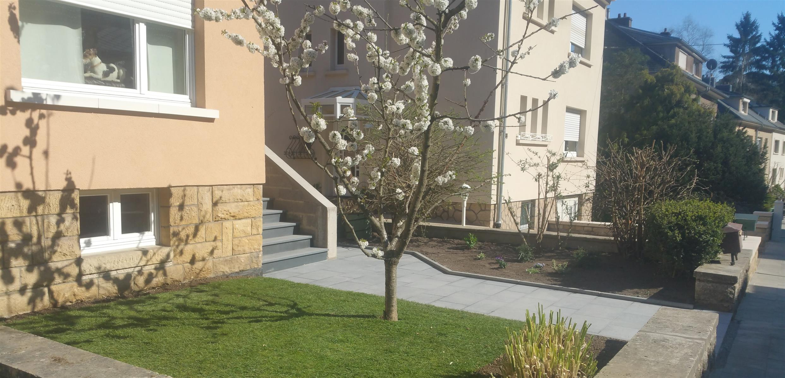
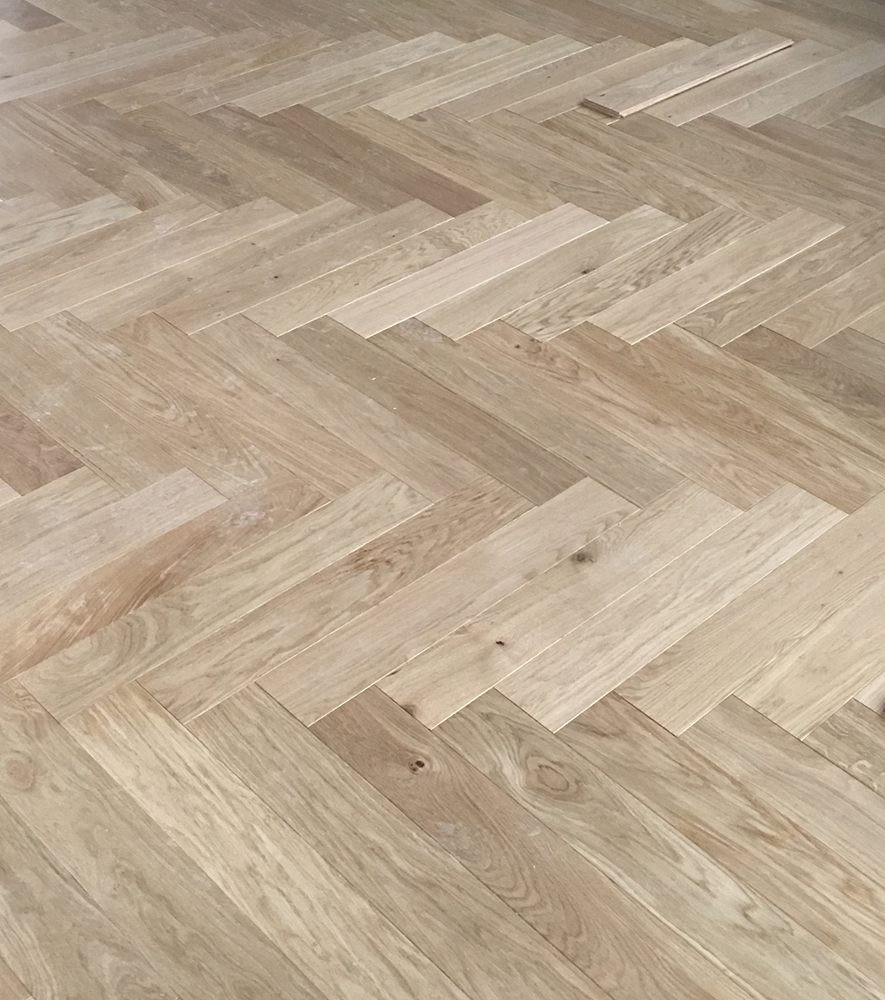
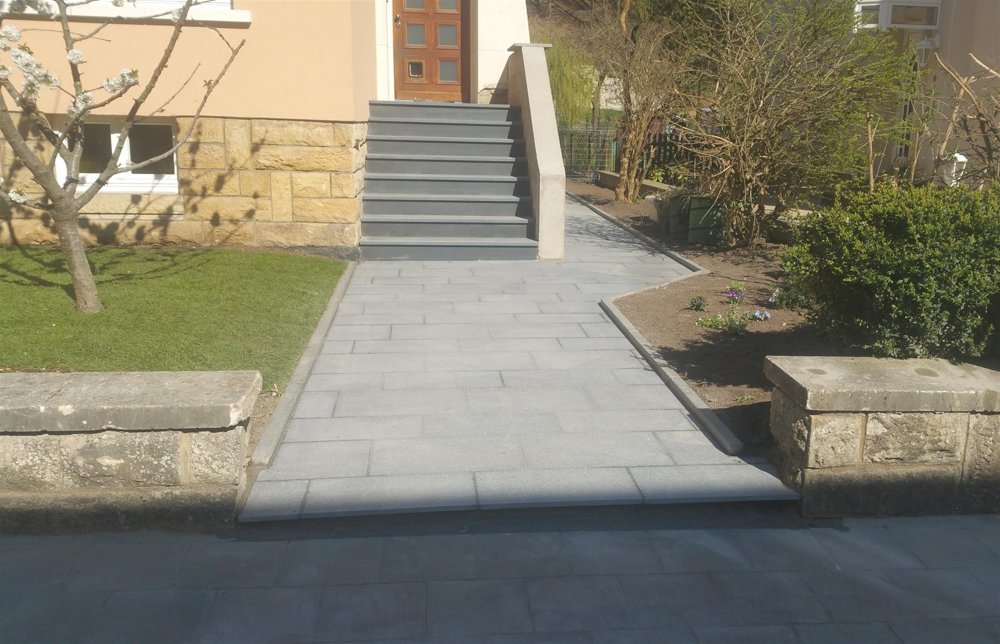

NOS COMPÉTENCES:
Gros œuvre, construction, parachèvement, démolitionTerrassement, étanchéité
Voiries et pavages
Chapes
Aménagement intérieur et extérieur
Rénovation de façades
Travaux de peinture et de plâtrage
Pose de carrelages
Travaux d'extension, vérandas...
Home staging : conseils en décoration, supervision d'un architecte d'intérieur, design et ameublement...
ELECTRICITÉ
Le pôle électricité est spécialisé dans tous les travaux d'électricité générale. Grâce à notre équipe de professionnels qualifiés, optez pour la sécurité et la compétence, quels que soient les travaux à accomplir.
ELECTRICITÉ GÉNÉRALE:
Pose d'un réseau électriqueAménagements de bureaux et habitations
Chauffage électrique
Eclairage intérieur
Mise en place d'éclairage artistique
Mise en conformité
Dépannage
Installations et rénovations électriques
CÂBLAGE RÉSEAUX:
Pose d'un réseau informatiqueTéléphonique
Fibre optique
DOMOTIQUE:
InterphoneVidéosurveillance
SÉCURITÉ:
Sorties de secoursPose et maintenance d'alarmes
Systèmes d'alarmes avec et sans fil
Détecteurs d'incendie
Alarmes d'intrusion
Télécommandes de gestion
Badges d'accès
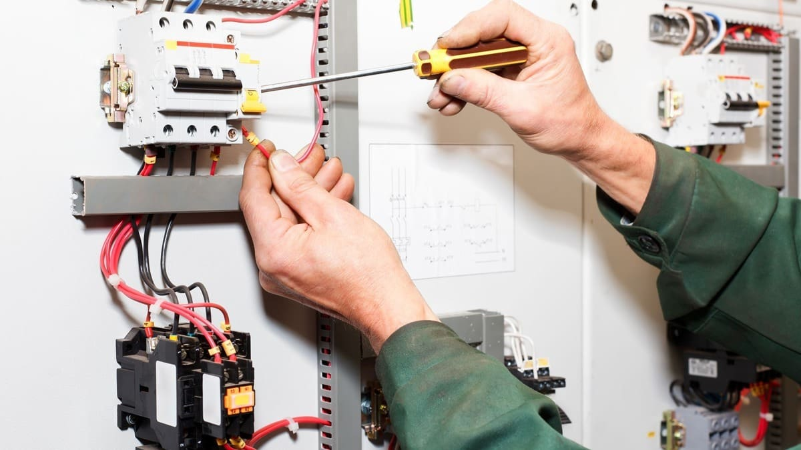
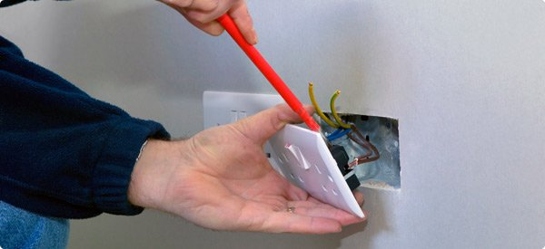
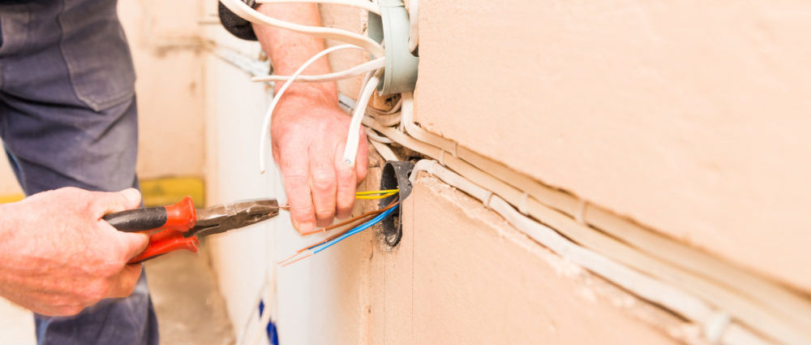
 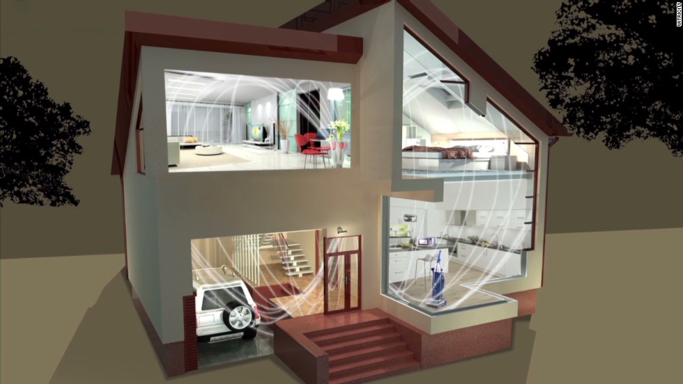
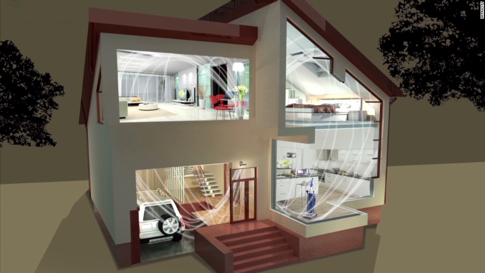
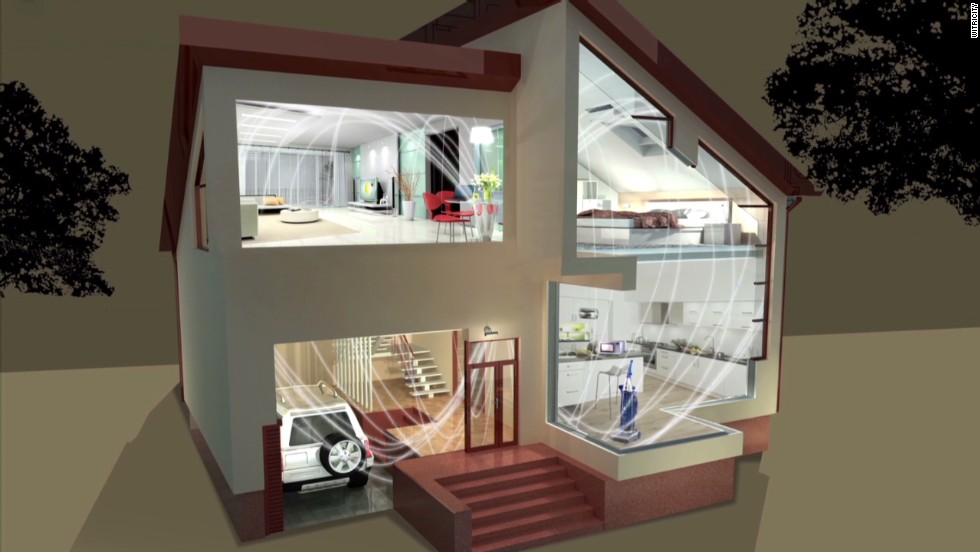
CONSTRUCTION
Getra Construction est dévoué à tous vos projets personnels ou venant d’un architecte. Nous faisons des nouvelles constructions, gros-œuvre, création d’un agrandissement/extension de maison.
Nous vous conseillons dans la conception technique et pratique en mettant en œuvre vos idées personnalisées, en vous assurant un intermédiaire unique. Ainsi, tous nos corps de métiers sont à votre disposition pour n'avoir qu'une seule facture.
Notre expérience et notre expertise vous garantissent la construction de vos rêves, en toute sérénité !
Maçonnerie générale
Coulage de dalle en béton
Ferraillage
Mur de soutènement
Mur préfabriqué
Coffrage tout type
Rénovation intérieure et extérieure
Construction de piscine
Enduits intérieurs et extérieurs
Crépissage, enduisage & mortier
Dallages & pavage
Ravalement en pierre de façade
Murets et pierre, en brique
Terrasses extérieures
Coulage de dalle en béton
Ferraillage
Mur de soutènement
Mur préfabriqué
Coffrage tout type
Rénovation intérieure et extérieure
Construction de piscine
Enduits intérieurs et extérieurs
Crépissage, enduisage & mortier
Dallages & pavage
Ravalement en pierre de façade
Murets et pierre, en brique
Terrasses extérieures
 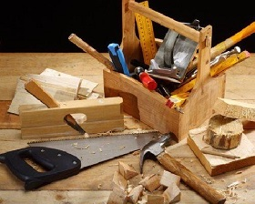
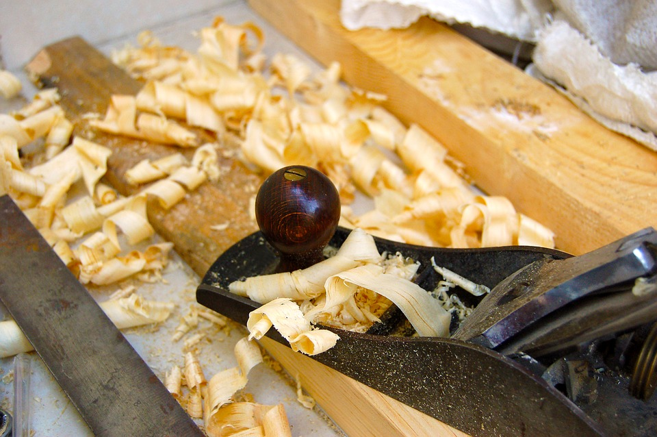
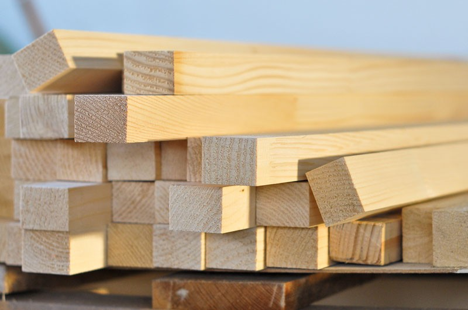
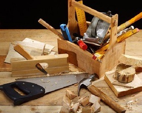
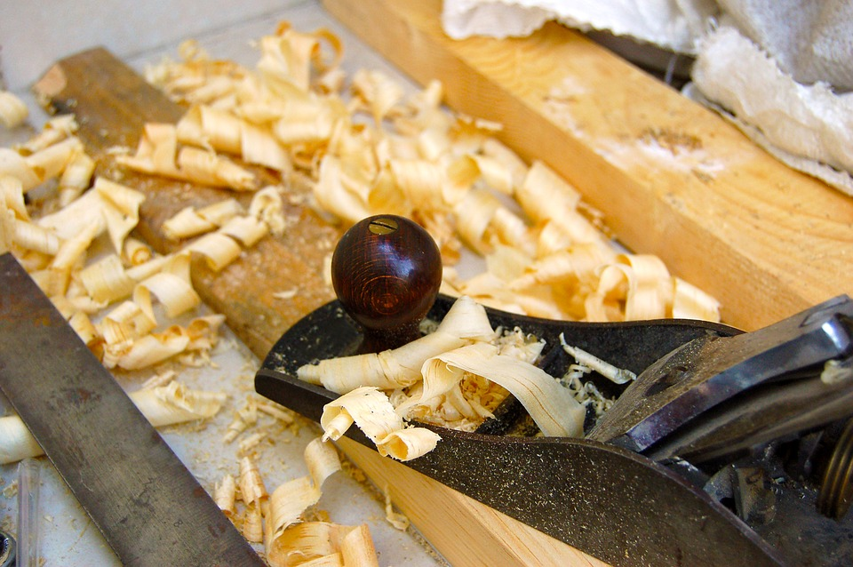
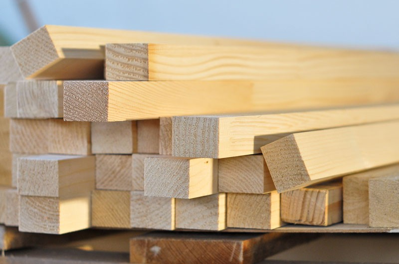